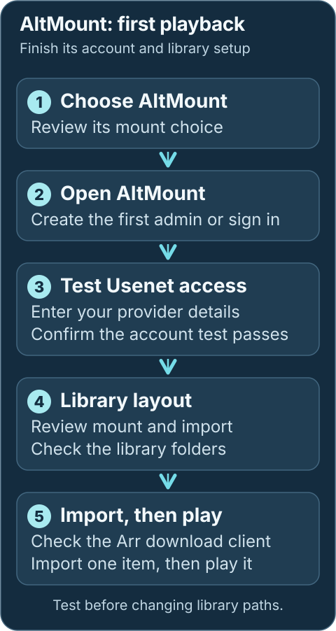

AltMount (Core Service)¶
AltMount connects your Usenet accounts to Sonarr, Radarr and your media server. Its web interface handles provider accounts, queues, content access and the way completed items enter your library.
In DUMB, AltMount is a core Usenet workflow service. DUMB installs and starts AltMount, supplies its baseline configuration, embeds its UI, and connects enabled Sonarr, Radarr, Lidarr, and Whisparr instances whose core_service includes altmount.
First-start checklist¶
- Select AltMount and your intended Arr applications during DUMB onboarding, then choose the mount mode. Reopen onboarding from Settings → Launch Onboarding if needed.
- Open the AltMount service card. On DUMB Config, use Start if stopped, then select Embedded UI. Create the first administrator in AltMount or sign in to the existing account.
- Replace first-run WebDAV credentials before exposing the endpoint outside a trusted network. Update dependent clients and restart the affected mount when needed.
- Add and test at least one TLS-enabled Usenet provider account. Review the selected mount type and path in AltMount's Mount settings; shared accounts must stay within their total connection allowance.
- Open AltMount → Configuration → Import. Choose
NONE,SYMLINKorSTRMand prepare any required import directory. This choice is separate from the mount mode. Follow Import strategy and library paths before sending a real item. - In each Arr's Embedded UI, test the
altmountentry under Settings → Download Clients, then test its indexers. Review Settings → Media Management → Root Folders and add that same library folder to your media server. - Send one small intended NZB. Follow the queue through import, scan the media library and play it. A successful provider test alone does not check library visibility or playback.
Development update · not in the released 2.23.0 docs
Setup checklist and remaining work¶
Choose the mount/import arrangement deliberately. The checklist collects or references provider accounts and guides selected Arr connections. Authorize the AltMount administrator, choose direct/symlink/STRM behavior, provide external mounts and validate paths. Sharing an account does not create an unlimited connection budget.
On recognized guarded versions, enter an administrator name and password and explicitly choose Create the first AltMount administrator. DUMB registers only while the native server confirms zero users and open first-user registration, then verifies the authenticated session. Existing administrators are reused rather than recreated. You can also complete this step in AltMount's own UI. The checklist exchanges an authorized temporary administrator login for a protected settings session and removes the submitted password after successful authorization.
The download-client/SABnzbd API key does not authorize administrator settings changes. A settings session can expire; authorize the relevant task again when AltMount rejects it. Administrator authorization does not move library files or enable existing scan/sync schedules.
The WebDAV task reuses authenticated existing custom credentials when possible. To set or rotate them, enter the replacement credentials, review the masked field preview and explicitly approve that exact proposal. DUMB verifies authenticated WebDAV access and keeps the handoff to selected consumers private. Coordinate external clients separately: DUMB cannot rewrite unknown consumers. For an internal rclone mount, changing credentials requires an explicitly authorized AltMount-only restart, which can interrupt active playback. External/no-mount layouts can use the supported native hot configuration path. API/configuration checks do not prove FUSE mounts or the complete playback workflow.
Requires the backend setup-arrangement capability. See Setup checklist and automation for retained tasks, coverage and safe retries.
Workflow diagram¶

Geek details: how requests, providers, mounts and libraries connect
%%{ init: { "flowchart": { "curve": "basis" } } }%%
flowchart TD
A([Request Sources:<br/>Seerr, Trakt,<br/>Plex Watchlist,<br/>NeutArr])
B[Arr Services:<br/>Sonarr, Radarr,<br/>Lidarr, Whisparr]
C[[Prowlarr / Usenet Indexers]]
D[AltMount<br/>SABnzbd-compatible API]
E@{shape: cloud, label: "NNTP Providers"}
F[[Content Access:<br/>WebDAV + selected<br/>mount mode]]
G[Import Strategy:<br/>NONE / SYMLINK / STRM]
H[Arr Import +<br/>Library Organization]
I([Media Servers:<br/>Plex, Jellyfin, Emby])
J[DUMB Setup + Onboarding]
A ==> B
C <==> B
B e1@==> D
D e2@<==> E
D ==> F
F ==> G
G e3@==> H
H e4@==> I
J -. installs and configures .-> D
J -. wires linked Arr clients .-> B
classDef animate stroke-dasharray: 9,5,stroke-dashoffset: 900,animation: dash 25s linear infinite;
class e1,e2,e3,e4 animateThe dashed arrows are DUMB automation. The solid arrows are the normal request and media flow after setup.
Service relationships¶
AltMount uses your Usenet provider accounts and connects to the Arr applications you select. Prowlarr can supply indexers; Plex, Jellyfin or Emby plays the resulting library. A usable Usenet provider account is required.
Geek details: service classification and runtime dependencies
| Classification | Role |
|---|---|
| Core Service | Usenet WebDAV, streaming, and Arr download-client workflow |
| DUMB Dependencies | None by default; PostgreSQL is enabled only for an optional database cutover |
| External Requirement | At least one usable NNTP provider account |
| Integrates With | Sonarr, Radarr, Lidarr, Whisparr, Prowlarr, request services, and media servers |
| Exposes UI | Yes, on the configured AltMount port and through DUMB's embedded UI |
external_rclone does not create or start a DUMB-managed rclone instance. In that mode AltMount exposes its rclone RC service, while you remain responsible for the external mount process.
What AltMount provides¶
Use AltMount's web interface to add providers, watch its queue and choose how imported items enter your library. It supports multiple provider accounts and several library styles, including direct mounted folders, symlinks and .strm files. Review the import choice below before sending a real request.
Geek details: streaming protocols, content access and processing features
- A web UI and API for configuration, queue visibility, and health monitoring
- WebDAV access and range-based streaming directly from Usenet
- A SABnzbd-compatible download-client API for Arr applications
- Multiple NNTP providers with load distribution and failover
- Transparent handling of NZB content and supported archive formats
NONE,SYMLINK, andSTRMimport strategies- Built-in FUSE and rclone mount modes, plus an external-rclone mode
- Local metadata with optional SQLite-to-PostgreSQL migration through DUMB
AltMount owns the media-processing behavior. DUMB supplies the service lifecycle and integration around it.
What DUMB manages¶
DUMB installs and starts AltMount, keeps your selected mount arrangement in sync, and creates the selected Arr connections. You manage administrator access, provider accounts, import settings and media-library folders in the applications' own interfaces.
Keep mount choices in DUMB's settings and import choices in AltMount. DUMB reapplies its managed connection and mount settings during setup, so review the selections there before changing them elsewhere.
Geek details: generated secrets, authoritative fields and integration ownership
| DUMB manages | You manage in AltMount |
|---|---|
| Downloads the architecture-specific release binary and records its version | Administrator credentials and application access policy |
| Creates config, metadata, log, rclone, and mount directories | Provider accounts, connection allocation, and TLS policy |
Generates JWT_SECRET and ALTMOUNT_API_KEY when missing |
WebDAV credentials, external clients, and public/proxy settings |
Maps DUMB's mount choice into AltMount's native mount_type |
Import strategy, import directory, streaming cache, health monitoring, and advanced provider behavior |
| Enables SABnzbd compatibility and adds standard media categories | Arr root folders, media-server library paths, and validation of the complete import path |
| Adds linked Arr instances to AltMount and adds AltMount as their download client | Optional AltMount webhooks and any tuning beyond DUMB's baseline |
| Proxies the root-style web application into the service page | AltMount user accounts and application-level access policy |
DUMB preserves most AltMount settings, but some fields are authoritative
DUMB creates /altmount/config.yaml only when the file is missing. On later setup or restart passes, it preserves providers and other AltMount-owned settings while synchronizing the DUMB-managed mount path/type, rclone mode, API prefix/key, SABnzbd enablement/categories, and Arr integration structure.
Geek details: alternative direct URLs, health probes and embedded routes
Default port and URLs¶
| Endpoint | Default | Purpose |
|---|---|---|
| Native listener | 8088 |
AltMount web UI, WebDAV, SABnzbd-compatible API, and application API |
| Health probe | http://127.0.0.1:8088/live |
Used by DUMB while completing post-start Arr integration |
| DUMB embedded route | /service/ui/altmount |
Traefik-backed service UI route |
| Frontend iframe route | /ui/altmount |
Internal dmbdb iframe/proxy context; open it from the AltMount service page |
The native port is inside the DUMB container. It is directly reachable from the host only if your deployment publishes or otherwise exposes it.
Technical details: configuration reference
Configuration in dumb_config.json¶
The current default block is:
{
"altmount": {
"enabled": false,
"postgres_enabled": false,
"postgres_database": "",
"process_name": "AltMount",
"repo_owner": "javi11",
"repo_name": "altmount",
"pinned_version": "latest",
"suppress_logging": false,
"log_level": "INFO",
"port": 8088,
"auto_update": false,
"auto_update_interval": 24,
"auto_update_start_time": "04:00",
"mount_type": "rclone",
"config_dir": "/altmount",
"config_file": "/altmount/config.yaml",
"metadata_dir": "/altmount/metadata",
"mount_path": "/mnt/debrid/altmount",
"log_file": "/altmount/logs/altmount.log",
"command": [
"/altmount/altmount",
"serve",
"--config",
"/altmount/config.yaml"
],
"env": {
"PUID": "{puid}",
"PGID": "{pgid}",
"PORT": "{port}",
"JWT_SECRET": "",
"COOKIE_DOMAIN": "localhost",
"ALTMOUNT_API_KEY": ""
}
}
}
Important fields¶
enabled: Starts AltMount under DUMB's process manager.pinned_version: Uses the latest upstream release or a specific release tag. DUMB installs the matching architecture-specificaltmount-cliasset.port: Sets the native AltMount listener and is copied intoenv.PORT.mount_type: Selects DUMB's operator-facing mount mode.mount_path: Shared path where the selected internal mount is exposed; DUMB synchronizes this into AltMount's root-level configuration.config_dir,config_file,metadata_dir,log_file: Persistent paths managed by DUMB.auto_update,auto_update_interval,auto_update_start_time: Use DUMB's normal update scheduler.postgres_enabled,postgres_database: Select the optional PostgreSQL backend after completing the guarded migration workflow.env.JWT_SECRET,env.ALTMOUNT_API_KEY: Generated and saved by DUMB when blank. Treat both as secrets.env.COOKIE_DOMAIN: Defaults tolocalhost; change it only when your direct or reverse-proxied AltMount access model requires another cookie domain.
command, PUID, PGID, and PORT are reconciled by setup. Avoid treating them as independent AltMount UI settings.
Mount modes¶
Choose the mount mode during onboarding or on AltMount's DUMB Config. The normal rclone choice lets AltMount make content available as a folder. Native FUSE is another managed folder option; external_rclone requires an operator-managed mount, and none leaves local mounting to other clients. Keep a working existing path until its consumers and migration have been reviewed.
Mount mode makes content accessible. The import strategy below decides what the Arr application imports; changing one does not complete the other.
Geek details: mount-mode mapping, external ownership and stale-mount handling
| DUMB value | AltMount value | Behavior |
|---|---|---|
dfs |
fuse |
AltMount's native FUSE mount at mount_path |
rclone |
rclone |
Default; AltMount starts its built-in rclone mount and RC service |
external_rclone |
rclone_external |
AltMount starts the RC service but does not mount; you provide the external rclone process |
none |
none |
AltMount does not start a FUSE or rclone mount; WebDAV remains available |
DUMB creates /mnt/debrid/altmount by default and normalizes its ownership. During an install/update pass, DUMB also unmounts a stale FUSE mount at that exact path before replacing the AltMount binary. A non-FUSE mount is preserved rather than removed automatically.
Mount mode and import strategy are different decisions
mount_type controls how AltMount content becomes visible as a filesystem. The AltMount-owned import strategy controls what Arr imports from that content.
Import strategy and library paths¶
Configure the import strategy in AltMount → Configuration → Import:
| Strategy | Behavior | Typical use |
|---|---|---|
NONE |
Arr reads directly from the mounted content | Simplest direct-mount workflow |
SYMLINK |
AltMount creates category-based links in an import directory | Upstream's recommended choice for most Arr workflows |
STRM |
AltMount writes .strm files that point to WebDAV URLs |
Common with Emby/Jellyfin or URL-based playback |
DUMB does not currently choose the import strategy, create its import_dir, or set Arr root folders/media-server libraries for AltMount. Keep every path inside the shared DUMB namespace—normally under /mnt/debrid—and make sure AltMount, the linked Arr, and the media server all see the same container path.
For SYMLINK or STRM, create and validate the chosen import directory before sending a real release. For NONE, confirm the linked Arr can browse the mounted category path under /mnt/debrid/altmount.
See AltMount's ARR integration guide for the application-level import and webhook options.
DUMB-to-AltMount Arr integration¶
Select AltMount for the intended Arr instances during onboarding. For an existing instance, open its DUMB Config, include altmount in its core_service selection, and Save to File. After both services are running, test the generated altmount client in the Arr application. Merely starting an Arr does not assign it to AltMount.
Geek details: manual Arr workflow selection and automatic client wiring
For an enabled Sonarr, Radarr, Lidarr, or Whisparr instance, set:
For a shared Arr instance that uses several workflow services, use a list or the equivalent comma-separated UI selection:
During guided onboarding, DUMB then:
- Installs/configures AltMount and generates its internal secrets if needed.
- Starts the selected Arr services and AltMount.
- Reads each linked Arr API key from its application config.
- Upserts the Arr instance URL/API key into AltMount's
arrssection. - Enables AltMount's SABnzbd-compatible API and standard categories (
movies,tv,music, andadult). - Creates or updates an
altmountSABnzbd download client in each linked Arr with the matching category.
The core_service selection scopes normal Arr integration. Review the exact native entries after setup; enabling an Arr process alone does not assign it to AltMount.
Finish the AltMount-owned setup
A new native configuration starts with providers empty. Configure and test the required NNTP accounts in AltMount. Choose and validate the import strategy, confirm the Arr root/import paths, and test playback before relying on automation.
AIOStreams playback¶
AIOStreams can send matching NZBs to AltMount's SABnzbd-compatible API and serve the resulting WebDAV stream:
- Enable AltMount's SAB API and copy its API key.
- Create dedicated WebDAV credentials.
- In AIOStreams, add AltMount under Services.
- Use
http://127.0.0.1:8088for URL, replacing8088with AltMount's saved DUMB port. - Enter the API key and WebDAV credentials.
- Prefer leaving Public URL blank and supplying an AIOStreams auth credential (
username:password) whose user has Proxy permission. Use a direct Public URL only when AltMount has its own trusted HTTPS origin reachable by the player.
This does not change AltMount's DUMB-selected mount mode or Arr import strategy. AIOStreams communicates with the application API and WebDAV surface directly; never use its embedded /ui/altmount route as the service URL.
PostgreSQL migration¶
SQLite is the default and needs no separate database setup. To move an existing library to PostgreSQL, open Database Migration on the AltMount service page. Run a rehearsal, review the imported table counts, then use guarded cutover and check AltMount afterward.
Do not enable postgres_enabled directly when existing data must be retained. Back up the service and follow SQLite to PostgreSQL Migration.
Geek details: database files, connection configuration and rollback artifacts
AltMount supports SQLite and PostgreSQL. New/default installs use /altmount/altmount.db.
For an existing SQLite-backed service, open Database Migration on the AltMount service page, run a rehearsal, validate the imported table counts against AltMount's application-created PostgreSQL schema, and only then run cutover. DUMB writes the PostgreSQL DSN into /altmount/config.yaml, registers the target database (altmount by default), and retains the SQLite file and migration backups for rollback.
Do not enable postgres_enabled directly when existing data must be retained. DUMB has not found an upstream application-specific data migration tool, so the guarded DUMB workflow and post-cutover application checks are important. See SQLite to PostgreSQL Migration.
Geek details: PostgreSQL schema compatibility handling
AltMount v0.3.2 migration compatibility
AltMount v0.3.2 contains invalid PostgreSQL syntax in its bundled migration 10 expression index. DUMB applies the intended index only in an isolated staging database whose latest Goose version is exactly 9 and which contains the expected import_queue.metadata column. Any mismatch refuses the repair and restores SQLite instead of skipping unknown schema work.
Back up AltMount¶
Keep an independent backup before updates or migrations. AltMount's application data contains account credentials, keys and library metadata, so keep the backup private.
Geek details: installed files and persistence paths
| Path | Purpose |
|---|---|
/altmount/altmount |
DUMB-installed release binary |
/altmount/config.yaml |
AltMount runtime configuration, including provider credentials |
/altmount/altmount.db |
Default SQLite database |
/altmount/metadata |
NZB metadata root |
/altmount/rclone |
AltMount's managed rclone files/state |
/altmount/logs/altmount.log |
AltMount application log |
/altmount/version.txt |
DUMB-managed installed-version marker |
/mnt/debrid/altmount |
Default selected mount path |
In the maintained Compose layout, back up /data/altmount (the persistence target behind internal /altmount) as sensitive application data. It can contain NNTP credentials, API keys, user data, and the SQLite database.
Embedded UI behavior¶
Geek details: embedded UI routing
AltMount is a root-route React-style application. dmbdb keeps its root navigation and root /api/* calls in the AltMount iframe context so they do not collide with DUMB's own application or API routes. Open the UI from the AltMount service page rather than browsing directly to /ui/altmount.
If the embedded UI loses routing context, reload the DUMB service page. The direct Traefik-backed route is /service/ui/altmount when embedded service UIs are enabled.
Troubleshooting¶
AltMount does not start¶
Open AltMount's DUMB Config to check its status, then Service Logs for the first error. Keep that error with your support request. If you recently changed a port, mount or import path, review the saved change before retrying startup.
Geek details: diagnose executable, configuration and mount failures
Host and filesystem checks¶
- Check the DUMB service log and
/altmount/logs/altmount.log. - Confirm
/altmount/altmountexists and is executable. - Verify the configured port is free and
/altmount/config.yamlis valid YAML. - For FUSE/rclone modes, check whether
/mnt/debrid/altmountis a stale, dangling, read-only, or busy mount path.
Provider or streaming failures¶
- Confirm at least one provider is enabled and its credentials, TLS mode, and connection limit are valid.
- Do not allocate more combined connections than the provider account permits.
- Review AltMount's queue and health pages for missing articles, masked files, or cache pressure.
Arr download-client setup is missing¶
Check that both services are running and AltMount is selected for the Arr instance in DUMB Config. Open the Arr's Embedded UI → Settings → Download Clients and test altmount. If it is still missing after guided setup, save the relevant service-log errors for support.
Geek details: inspect integration secrets, category selection and retries
Arr integration checks¶
- Confirm the Arr instance is enabled and
core_serviceincludesaltmount. - Confirm DUMB can read the Arr API key and AltMount's generated
ALTMOUNT_API_KEYis still present. - Verify both services are running, then restart AltMount or rerun the guided start so DUMB can repeat the integration pass.
- Check that the Arr category matches the DUMB defaults for its application type.
Import completes but the library cannot see the file¶
- Confirm
mount_path, the AltMountimport_dir, the Arr root folder, and the media-server library use paths visible inside the DUMB container. - For
SYMLINK, inspect the link target from inside the container and verify it remains under a shared path. - For
STRM, confirm the WebDAV URL written into the file is reachable by the player. - Use Arr Manual Import to separate path visibility problems from download-client problems.
Embedded UI/API requests open DUMB instead of AltMount¶
Reload the DUMB service page and reopen Embedded UI. If the issue continues, keep the browser error and service-log details for support.
Geek details: inspect embedded-route context and proxy logs
Proxy-route diagnostics¶
- Reopen the AltMount service page and reload the iframe to refresh
dumb_ui_servicecontext. - Verify embedded service UIs are enabled and
/service/ui/altmountresponds. - Check dmbdb proxy logs for root-route or
/api/*routing errors.